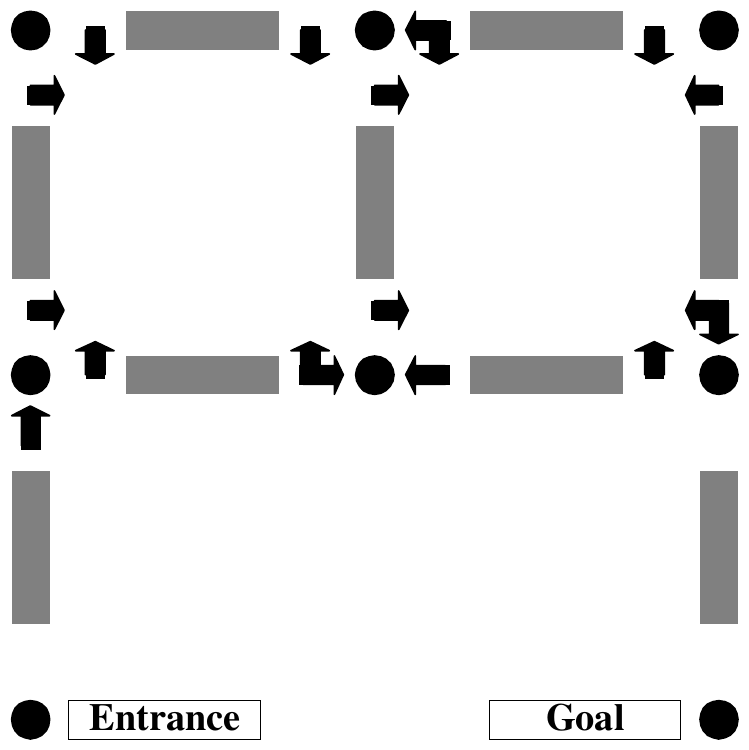
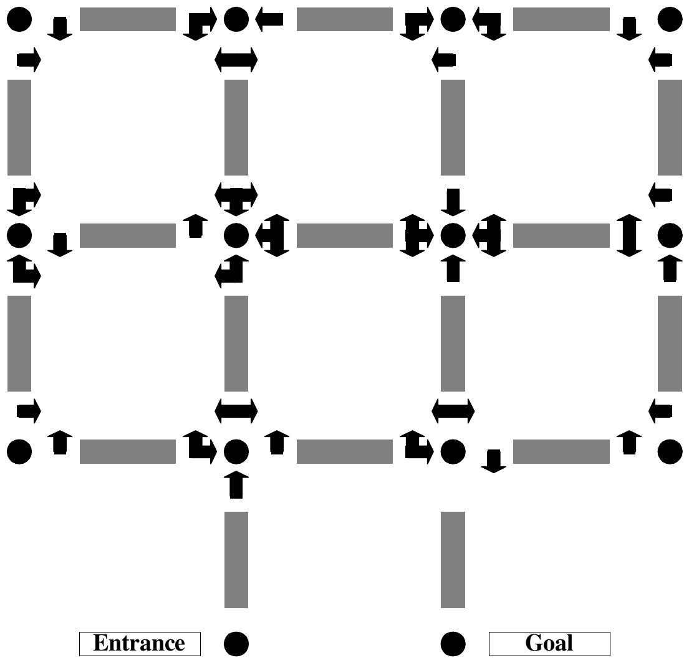

The 2000 ACM Programming Contest World Finals sponsored by IBM · Problem A
The 1999 World Finals Contest included a problem based on a “dice maze.” At the time the problem was written, the judges were unable to discover the original source of the dice maze concept. Shortly after the contest, however, Mr. Robert Abbott, the creator of numerous mazes and an author on the subject, contacted the contest judges and identified himself as the originator of dice mazes. We regret that we did not credit Mr. Abbott for his original concept in last year’s problem statement. But we are happy to report that Mr. Abbott has offered his expertise to this year’s contest with his original and unpublished “walk-through arrow mazes.”
As are most mazes, a walk-through arrow maze is traversed by moving from intersection to intersection until the goal intersection is reached. As each intersection is approached from a given direction, a sign near the entry to the intersection indicates in which directions the intersection can be exited. These directions are always left, forward or right, or any combination of these.
Figure 1 illustrates a walk-through arrow maze. The intersections are identified as “(row, column)” pairs, with the upper left being (1,1). The “Entrance” intersection for Figure 1 is (3,1), and the “Goal” intersection is (3,3). You begin the maze by moving north from (3,1). As you walk from (3,1) to (2,1), the sign at (2,1) indicates that as you approach (2,1) from the south (traveling north) you may continue to go only forward. Continuing forward takes you toward (1,1). The sign at (1,1) as you approach from the south indicates that you may exit (1,1) only by making a right. This turns you to the east now walking from (1,1) toward (1,2). So far there have been no choices to be made. This is also the case as you continue to move from (1,2) to (2,2) to (2,3) to (1,3). Now, however, as you move west from (1,3) toward (1,2), you have the option of continuing straight or turning left. Continuing straight would take you on toward (1,1), while turning left would take you south to (2,2). The actual (unique) solution to this maze is the following sequence of intersections: (3,1) (2,1) (1,1) (1,2) (2,2) (2,3) (1,3) (1,2) (1,1) (2,1) (2,2) (1,2) (1,3) (2,3) (3,3).
You must write a program to solve valid walk-through arrow mazes. Solving a maze means (if possible) finding a route through the maze that leaves the Entrance in the prescribed direction, and ends in the Goal. This route should not be longer than necessary, of course.
The input file will consist of one or more arrow mazes. The first line of each maze description contains the name of the maze, which is an alphanumeric string of no more than 20 characters. The next line contains, in the following order, the starting row, the starting column, the starting direction, the goal row, and finally the goal column. All are delimited by a single space. The maximum dimensions of a maze for this problem are 9 by 9, so all row and column numbers are single digits from 1 to 9. The starting direction is one of the characters N, S, E or W, indicating north, south, east and west, respectively.
All remaining input lines for a maze have this format: two integers, one or more groups of characters, and a sentinel asterisk, again all delimited by a single space. The integers represent the row and column, respectively, of a maze intersection. Each character group represents a sign at that intersection. The first character in the group is N, S, E or W to indicate in what direction of travel the sign would be seen. For example, S indicates that this is the sign that is seen when travelling south. (This is the sign posted at the north entrance to the intersection.) Following this first direction character are one to three arrow characters. These can be L, F or R indicating left, forward, and right, respectively.
The list of intersections is concluded by a line containing a single zero in the first column. The next line of the input starts the next maze, and so on. The end of input is the word END on a single line by itself.
For each maze, the output file should contain a line with the name of the maze, followed by one or more lines with either a solution to the maze or the phrase “No Solution Possible”. Maze names should start in column 1, and all other lines should start in column 3, i.e., indented two spaces. Solutions should be output as a list of intersections in the format “(R,C)” in the order they are visited from the start to the goal, should be delimited by a single space, and all but the last line of the solution should contain exactly 10 intersections.
The first maze in the following sample input is the maze in Figure 1.
SAMPLE 3 1 N 3 3 1 1 WL NR * 1 2 WLF NR ER * 1 3 NL ER * 2 1 SL WR NF * 2 2 SL WF ELF * 2 3 SFR EL * 0 NOSOLUTION 3 1 N 3 2 1 1 WL NR * 1 2 NL ER * 2 1 SL WR NFR * 2 2 SR EL * 0 END
SAMPLE (3,1) (2,1) (1,1) (1,2) (2,2) (2,3) (1,3) (1,2) (1,1) (2,1) (2,2) (1,2) (1,3) (2,3) (3,3) NOSOLUTION No Solution Possible


Robert Abbott’s walk-through arrow mazes are actually intended for large-scale construction, not paper. Although his mazes are unpublished, some of them have actually been built. One of these is on display at an Atlanta museum. Others have been constructed by the American Maze Company over the past two summers. As their name suggests these mazes are intended to be walked through.
For the adventurous, Figure 2 a graphic of Robert Abbott’s Atlanta maze. Solving it is quite difficult, even when you have an overview of the entire maze. Imagine trying to solve this by actually walking through the maze and only seeing one sign at a time! Robert Abbott himself indicated that the maze is too complex and most people give up before finishing. Among the people that did not give up was Donald Knuth: it took him about thirty minutes to solve the maze.